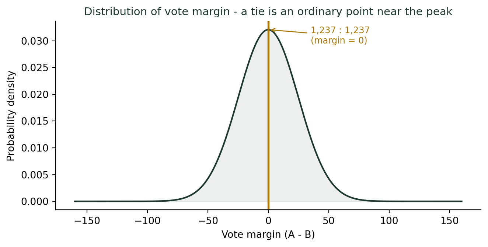
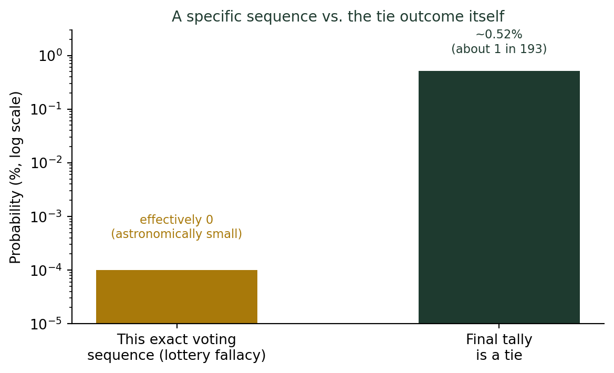

동점은 부정선거의 증거인가?
통계기초
확률
가설검정
2022년 대전 동구 지방선거, 두 후보의 득표수가 11,798표로 완전히 일치했다. 이런 우연, 통계적으로 얼마나 이상한 일일까?
개표방송을 보다가 눈을 의심한 순간
2022년 지방선거 개표 결과를 보다가, 나도 모르게 화면을 다시 봤다. 대전 동구 가선거구, 오관영 후보와 이재규 후보의 득표수가 11,798표로 완전히 일치했다. 두 사람 다 4인을 뽑는 선거구에서 공동 1위였다.
강의 시간에 이 이야기를 꺼내면 학생들의 반응은 늘 비슷하다. “그런 우연이 실제로 있어요?” “혹시 조작 아니에요?” 흥미로운 지점은, 이 의심이 통계를 어설프게 알수록 더 그럴듯하게 느껴진다는 것이다.
복권의 오류: 숫자가 나왔다는 사실은 증거가 아니다
동전을 30번 던지면 앞뒤의 특정 배열(예: 앞앞뒤앞뒤뒤앞…)이 나온다. 이 배열 하나가 나올 확률은 약 10억 분의 1이다. 그렇다면 동전을 30번 던진 결과 자체가 “기적”이고 “조작의 증거”일까?
물론 아니다. 10억 가지 배열 중 어느 하나는 반드시 실현되어야 하기 때문이다.
복권의 오류 (Lottery Fallacy)
23,596명(11,798 + 11,798)이 투표한 정확한 순서 — 누가 몇 번째로 어느 후보를 찍었는지까지 포함한 그 특정한 순서 — 가 나올 확률은 상상하기 어려울 만큼 작다. 하지만 그건 그날 실제로 일어난 다른 어떤 투표 순서라도 마찬가지다.
표본공간 안의 모든 개별 경로는 거의 같은(그리고 똑같이 작은) 확률을 가진다. “이 결과가 나왔다”는 사실 자체의 정보량은 0이다. 이를 복권의 오류(lottery fallacy)라 부른다.
“그래도 동점은 특별하지 않나요?”
여기서 한 발 더 들어오는 반론이 나온다. 개별 투표 순서는 임의의 한 점이지만, 최종 집계가 동점(A = B)이 되는 것은 특별한 사건 아닌가? 실제로 우리나라 공직선거법 제188조는 동점 시 최고 득표자 중 연장자를 당선인으로 정하도록 규정할 만큼, 절차적으로도 이례적인 상황으로 다룬다.
이 반론은 그냥 넘길 수 없다. 그런데 “절차적으로 특별하다”는 것과 “확률적으로 희귀하다”는 것은 서로 다른 질문이다.
득표 차이가 0(동점)인 지점은 분포의 정중앙, 즉 가장 있을 법한 결과다. “희귀한 사건”이라는 인상은 이미 여기서부터 흔들린다.
실제로 계산해보면 얼마나 드문 일일까
두 후보가 총 23,596표를 정확히 반으로 나눠 가질 확률은 정규근사로 다음과 같이 계산된다.
\[P(A = B) \approx \sqrt{\frac{2}{\pi n}}\]

23,596명의 개별 투표 “순서”까지 특정해서 확률을 구하면 사실상 0에 가깝다. 그러나 우리가 실제로 관측한 것은 그 순서가 아니라 최종 집계 결과다. 그리고 최종 집계가 동점이 될 확률은 약 0.5%, 대략 200번에 한 번꼴로 일어날 수 있는 일이다. 로또 1등(약 800만 분의 1)과는 비교할 수 없을 만큼 흔하다.
두 확률을 섞으면 안 된다
| 구분 | 값 | 의미 |
|---|---|---|
| 이 정확한 투표 순서 | 사실상 0 | 복권의 오류 — 어떤 결과든 이 수준으로 작다 |
| 최종 집계가 동점 | 약 0.5% (약 1/193) | 실제로 검토해야 할 값 |
“동점이 나올 확률이 작으니 조작이다”라는 주장이 성립하려면, 앞의 값이 아니라 뒤의 값이 정말 작아야 한다. 그런데 0.5%는 통계학에서 흔히 쓰는 유의수준 5%보다도 오히려 작지 않은, 그리고 200번에 한 번은 벌어질 만한 수준의 확률이다.
더 깊이: 유의확률(p-값)의 정식 정의
이 글에서 다룬 “개별 순서와 집계 결과를 혼동하는 오류”는 p-값의 정의를 정확히 알면 자연스럽게 피할 수 있다. 강의노트 〈수리 통계 7. 가설검정과 신뢰구간 — 유의확률〉에서는 유의확률을 “귀무가설이 참일 때 검정통계량이 관측값보다 귀무가설을 기각하는 방향으로 더 극단적인 값을 가질 확률”로 정의한다.
결론: 작은 확률은 증거가 되지 않는다
세 줄 정리
- 개별 경로의 확률은 무엇이든 작다. “이 결과가 나왔다”는 사실만으로는 아무것도 증명되지 않는다.
- 우리가 실제로 물어야 할 것은 최종 집계 결과의 확률이다. 대전 동구 사례에서 동점 자체의 확률은 약 0.5%, 흔치는 않지만 결코 “조작”을 의심할 만큼 희귀하지 않다.
- 선거법이 동점을 절차적으로 특별히 다룬다는 사실과, 그 확률이 통계적으로 희귀하다는 것은 별개의 문제다.
강의를 마칠 때마다 나는 학생들에게 같은 말을 한다. “숫자가 작아 보인다고 놀라기 전에, 정확히 무엇의 확률을 계산한 것인지부터 물어보세요.” 대전 동구의 그 개표방송 장면은, 지금도 내 강의 자료 맨 앞자리를 차지하고 있다.